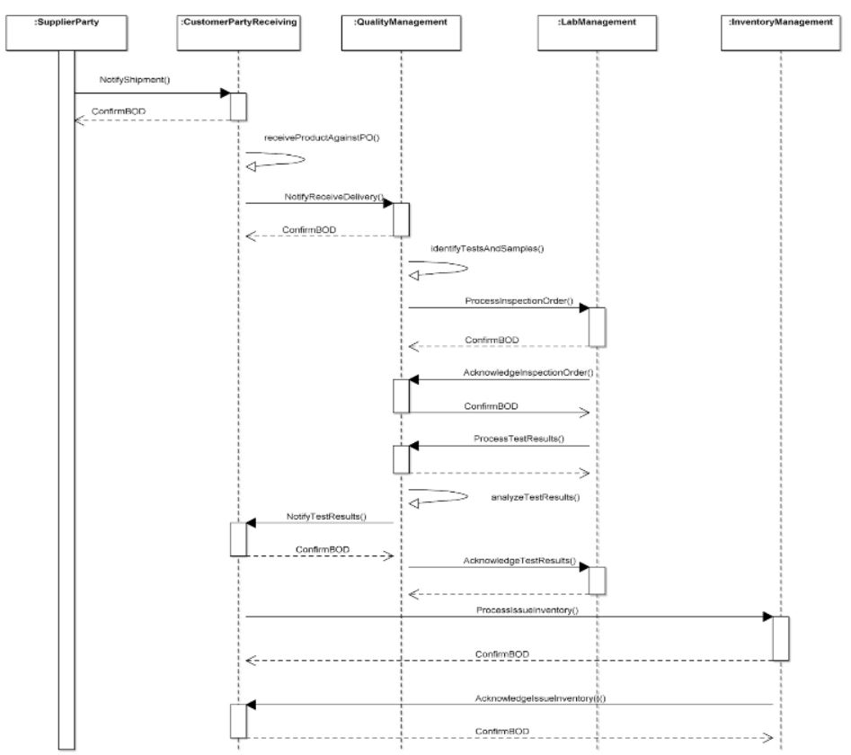

Scenario 69 - Incoming Inspection69.0 OverviewScenario #69 describes the integration for business software involved with the process of performing incoming inspection of items at the time of receipt. This involved pulling appropriate samples, sending an InspectionOrder to the laboratory, and obtaining the corresponding TestResults from the laboratory so that the received product can be properly dispositioned.The purpose of this scenario is to describe the participants in a mainstream business process, and to illustrate how the business systems of those participants can be integrated through messages exchange to realize the goals of that business process. This scenario is not meant to be the only model for integrating customer applications to lab information management applications. It is simply one model that may be used to guide one's own integration efforts. Many applications contribute to the generation of the InspectionOrder and the resulting TestResults. Some components involved within this business process include:
69.1 Scenario DiagramThe scenario below contains the participants involved in the interaction, the dialog flows or conversation between them, certain assumptions about the sequence of events, and assumptions about the technical approach, for example, whether a publish and subscribe or a query and response model is used for the exchange of information. This is a model to be used as a design recommendation, not a required approach.This is a model to be used as a design recommendation, not a required approach..  69.2 AssumptionsThis scenario assumes a loosely coupled, asynchronous approach with transaction management required but not explicitly defined.This scenario describes a model for one or more manufacturing components integrating with quality, inventory, receiving and lab management components. The environment for this integration is typically within a single external organization, initiated by the receipt of a supplier�s shipment. This scenario shows the Quality Management component initiating the InspectionOrder request. TestResults are received by Quality Management, who subsequently notifies Receiving. This scenario shows a �happy path� that is most often automated, unless there is an exception. In addition, there may be instances where all of the data is contained in the documents and other instances where additional binary information accompanies the InspectionOrder and ProcessTestResults, most commonly images or geographic files.. This scenario does not cover the physical movement of product, both by a TransportationParty from the supplier to the customer, or internal to the customer, placing received product in staging locations and into inventory. These normal activities are assumed to be supported by various supply chain applications. The diagram and descriptions of the business process for this scenario focus on how a successful execution of the business process should take place. There may be several places in this business process where errors can occur and corrective actions must be instituted. Since such actions are implementation dependent, detailed descriptions of the errors that might occur and the corrective actions that might be taken in response will not be provided for this scenario, although general information about errors that might happen and how they might be dealt with may be provided. 69.3 Participant DefinitionsThis scenario contains the following participants: Supplier, Customer Receiving, Quality Management, Laboratory Management, and Inventory Management. In some cases, Production Planning may be involved although they are not explicitly defined in this scenario.The definitions and details of these applications are left to the designer but are assumed to contain the functionality as defined by what is commonly sold in the commercial marketplace today. This definition is broadly accepted by the scenario designers and is a direct result of the decision not to define how the processing takes place within any individual application. Typical capabilities of these participants are described:
The most important factors in defining these participants is to ensure that an integration designer can communicate the requirements precisely enough to specify and design the integration processes needed and their interrelationships. Note that the evolution of eCommerce has yielded independent trading exchanges and other intermediaries between business operations and inventory management providers. Requirements and operations for intermediaries should be similar to direct links between the two components 69.4 Business Workflow (Sequence)The business workflow is graphically represented by starting at the Scenario top and reading from top down and from left to right. The arrows in a sequence diagrams shows the message exchanged, and the response to the message. A ConfirmBOD provides an acknowledge to the initial request that the original request was received and understood as a valid. The Acknowledge(noun) message indicates that the transaction was processed (committed), and a business person has reviewed and provided information related to the next step (accepted, rejected, etc.).The exchange of OAGIS BODs such as the InspectionOrder and TestResults may follow several different workflows, depending on if it fits within discrete manufacturing (e.g., electronics) or process manufacturing (e.g., animal or human food). The process depends on the type of product or products involved and the entities exchanging the documents. The sequence diagram illustrates the data exchanges involved within the business process.
The alternate sequence would be around non-conforming items that did not meet the referenced specification:
It should be noted when an ItemNonconformance occurs, the Quality Management (or Production Planning) team will typically research the vendor�s history, and consider retest if this has not occurred in the past. Another InspectionOrder would be provided to the lab, and the lab would pull the existing or an additional sample, and retest accordingly. If found acceptable this leads into an internal corrective action plan with the lab. If the test is repeatable, the Quality Management resources may attempt to reclassify the product if the measurement(s) suggests that is permissible, or return to the supplier/vendor (RTV). This may be a long running transaction as the failed samples may be sent to the vendor for confirmation before a Return Material Authorization is provided. 69.5 Exception HandlingException handling is highly localized as the result of how business capabilities are implemented including the deployed infrastructure, management and business rules. As such, this section of the Scenario documentation is planned to be used as a guide to help understand the additional intent of these Scenarios. If no exceptions are noted here, then it can be assumed that the Scenario designers agreed that the Scenario is straightforward and has no additional needs:
Copyright OAGi 2016 - All Rights Reserved -- OAGIS release 10.3 - Document Number: 20160901-69 |